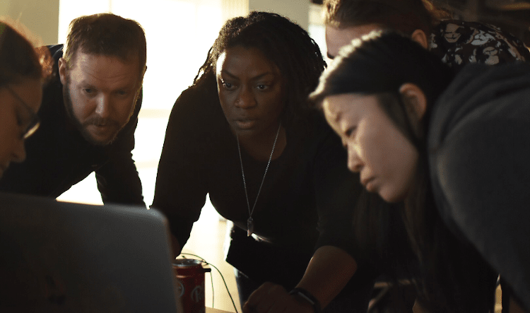

Build Your Skills for
Free
Advance your career by learning in-demand skills in programming

Advance your career by learning in-demand skills in programming
Why learn with free code camp
Large Community
Join our vibrant learning community of students,alumni and educators
Free Education
learn from our charity and save money on your education. This is made possible by the generous support of our monthly donors
Extensive Certifications
Earn industry-recognized, verifiable certifications in high-demand technologies
Comprehensive Curriculum
Enhance your technical skills without our linear, word-class, project based curriculum
.png)
Shawn Wang in Singapore
Software Engineer at Amazon
"It's scary to change careers. I only gained confidence that I could code by working through the hundreds of hours of free lessons on freeCodeCamp. Within a year I had a six-figure job as a Software Engineer. freeCodeCamp changed my life."
Sarah Chima in Nigeria
Software Engineer at ChatDesk
"It's scary to change careers. I only gained confidence that I could code by working through the hundreds of hours of free lessons on freeCodeCamp. Within a year I had a six-figure job as a Software Engineer. freeCodeCamp changed my life."
What exactly is freeCodeCamp?
freeCodeCamp is a community of people from all around the world who are learning to code together. We're a 501(c)(3) public charity.
How will freeCodeCamp help me learn to code?
You will learn to code by building dozens of projects, step-by-step, right in your browser, code editor, or mobile app.
Is freeCodeCamp really free?
Is freeCodeCamp really free?
Can freeCodeCamp help me get a job as a software developer?
Yes. Every year, thousands of people who join the freeCodeCamp community get their first software developer job.
What skills will I learn?
You will learn the skills most developers use on the job: HTML, CSS, JavaScript, Python, Linux, Git, and SQL, and more. You'll also learn how to use powerful libraries for web development, mobile app development, data science, and artificial intelligence.
How long does it take to learn all this?
freeCodeCamp is self-paced. Realistically, it may take several years of practicing coding to learn these skills well enough to get a job as a software engineer. Don't quit school or your day job until you feel ready.
How do I get started?
If you're a beginner, you should start at the beginning of the freeCodeCamp core curriculum. If you're more advanced, we still recommend starting at the beginning, but you can skip to whatever area you wish.
How do I earn the free verified certifications?
For each certification, you need to build its 5 certification projects, and get all of the project tests to pass to be able to claim your certification.